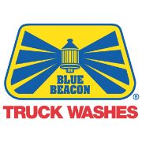

The story of my professional career begins at the ripe old age of seventeen. I was in high school and needed a job and I was under the assumption that KMart would be easy enough. I was correct. It was honestly the easiest job I've ever had. I worked that job for a year at which point I was working 4-5 hours a week and barely making enough money to pay for gas.
A friend of mine told me about this place that he was working at called Blue Beacon. I started working there almost six years ago and it has been somewhat of an adventure. I climbed the ranks and worked on first, second, and third shift. I know just about everything there is to know about that place, apart from the upper-level management positions.
So what is next for me? Well I'm hoping a career in the technology industry. A position where I can work from home so I am able to move to be with my girlfriend that lives in Fort Wayne, Indiana.